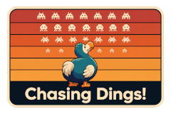
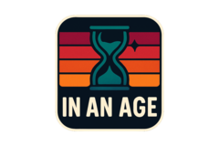

Tipa opens with AI gripes, then gets to the good stuff: a lightly attended Malifaux tournament and Rasputina squaring off against Sandeep Desai.
UltrViolet rounds up November gaming with Modern Warfare 4, Ravenfield, WoW: Forever, zombie hordes, and GTA VI looming over the SSD.
Sey unexpectedly falls for Milki Delivery, a cozy bike-courier game where cute vibes and Milki’s milk runs make resource gathering click.

Azuriel roasts the absurdity of GTA6 snagging Game Awards nominations, including Best Performance, before the game is even out.
Ellie recommends Botany Manor as a short, calming puzzle game about coaxing rare plants to bloom by piecing together scattered horticultural clues.
Wilhelm’s Stardew Valley farm life hits new milestones: horse stables, Willy’s boat repairs, and the wizard’s ex-wife sending them swampward.
Andrew Plotkin is pausing Visible Zorker’s regular cadence in December to compare three Zork 1 source versions, bug fixes and all.
Heartless keeps it simple and delighted: the Vikings crushed the Packers 30-10, and Thanksgiving suddenly looks sweeter.
Joar argues the activities that stick are the ones with a built-in next date and a little commitment, from OLLI to dance classes.
Mike digs into a weird Apple II clone with flimsy plastics, a loose speaker, and a probably bootleg ASCII-branded 65C02.
Axxuy realizes the bus ride to visit their partner is perfect for offline blogging, touch-typing, and making the commute feel pleasantly shorter.
Patrick finds E.R. Eddison’s Mistress of Mistresses gloriously strange: pagan prayer, portal fantasy, dynastic drama, and intense masculine relationships all at once.